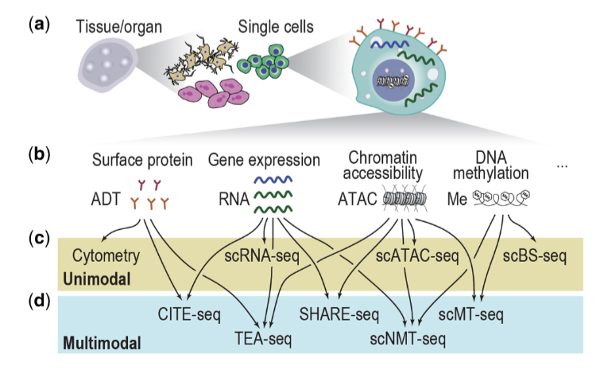
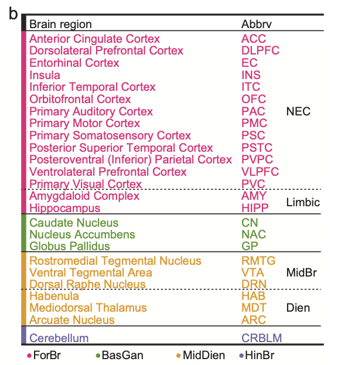
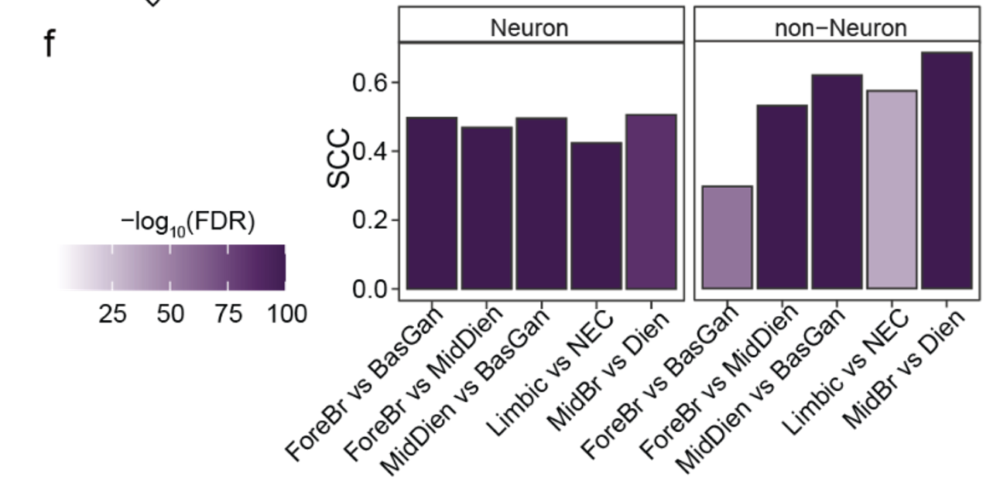
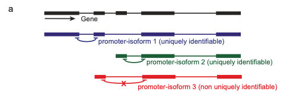
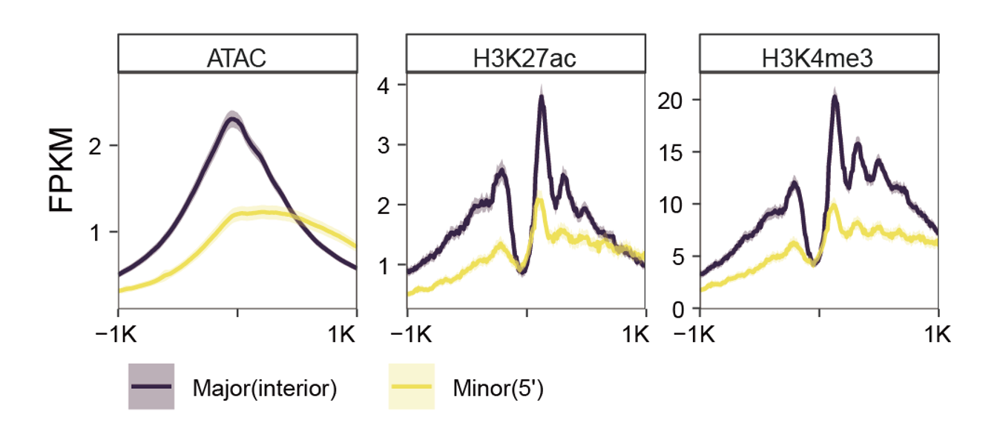
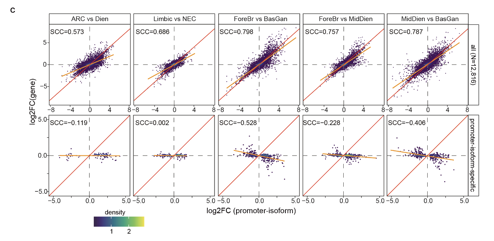
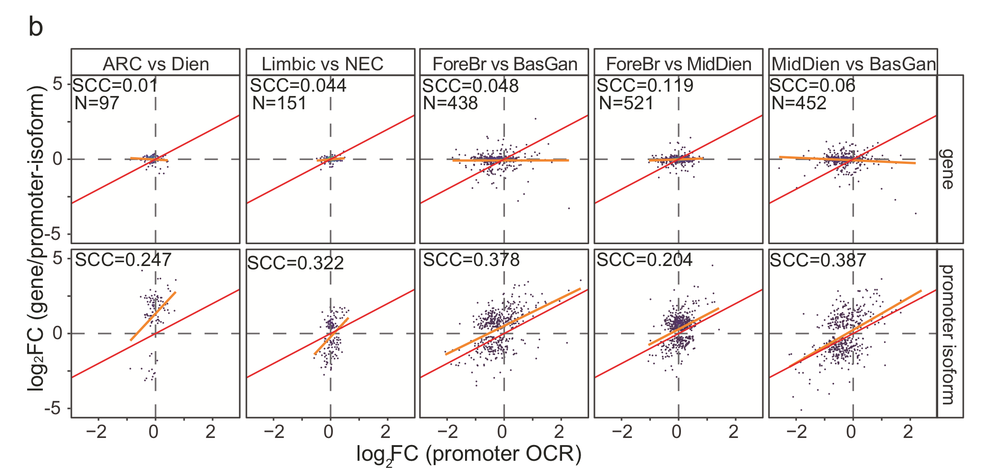
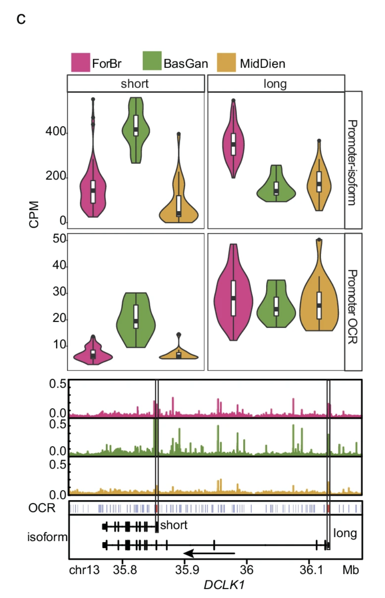

A multi-regional human brain atlas of chromatin accessibility and gene expression facilitates promoter-isoform resolution genetic fine-mapping
💡 Main point
유전자-조절요소 연결 분석(Enhancer-Promoter, E-P links)에 대한 연구
published: 8 November, 2024
Journal: Nature communication
Author: Panos Roussos
이 논문을 고른 이유:
isoform, epigenome을 포함한 brain atlas
unimodal을 넘어 multimodal로 통합하려는 시도가 이어지고 있는데
그 중에서 expression과 chromatin accebility가 합쳐진 싱글셀 ATAC에서의 중요성도 깊게 인지하고 있다
딥러닝 리뷰논문에서 보면

이렇게 Multimodal data가 생산되고 있는 실정인데,
앞으로 Bimodal을 넘어 Multimodal로 가려면 각각을 잘 이해하고 있는 것도 중요하다고 생각을 했고
그래서 Brain disorder에서의 ATAC 연구를 소개하면서 공부해보고자 했다.
또 ATAC으로 단순하게 Chromatin accessibility를 peak counting할 수 있다는 건 알았는데 이걸로 Promoter-isoform에 대해 찾아서 Brain disorder과 연관지어보는 점이 굉장히 신기했다
Abstract
chromatin acceability와 gene expression이 합쳐진 brain atlas
25개의 region을 아우르며, 6명의 neurotypical control을 포함한다
region별로 상이한 alternative promoter isoform usage와 enhancer-promoter interaction을 확인할 수 있는데, 이 부분에 관여하는 유전자가 neuropsychiatric disease risk variants와 강하게 연관이 되어 있더라
Intro
non-coding risk variants들의 기능적 해석을 유도하는 것이 어렵다
이 변이들은 Cis-regulatory elements(CRE)에 많이 포함?(enriched)되어 있는데,
이로 인해 논코딩 변이들이 표적 유전자(target genes)와 연결된다는 것을 시사
그러나 이러한 변이가 유전자 조절(gene regulation)에 미치는 영향을 이해하는 것은 여전히 불분명
Promoter-isoform
: Alternative transcription start sites를 의미하며 유전자 isoform 형성을 조절한다.
E-P(Enhancer-Promoter) interaction과 전사 조절의 기초적인 단위로써 작용한다?
하지만 promoter-isoform을 볼 수있는 수준에서의 enhancer-promoter interaction의 메커니즘을 우리가 완벽히 알지 못한다.
brain disorder과 관련해서, 기존 연구들이 cortical area 중심적으로 보았는데, Midbrain, Diencephalon, Basal ganglia 등의 subcortical area를 연구하는 것도 중요하다.
게다가 많은 genetic association 연구와 neuroimaging 연구에서, subcortical area의 neuropsychiatric disorder과의 연관성에 대한 증거를 제시하고 있다.
예를 들어, Basal ganglia에서만 나타나는 medium spiny neuron이라는게 SCZ common variant가 이 뉴런의 발현과 chromatin accessibility와 깊게 연관되어 있다.
그래서 이 연구에서는 brain disorder를 가지지 않는 6명의 뇌조직에 대해 25개의 region에 걸쳐 gene expression과 chromatin accessibility에 대해 동시에 데이터를 얻었다.
Result1 : An atlas of chromatin accessibility and gene expression in neuronal and non-neuronal nuclei across 25 brain regions
320,308 neuronal, 196,467 non-neuronal peaks를 가지는 25 brain region에 걸친 아틀라스 형성
FANS(Fluorescence-Activated Nuclear Sorting) 기법을 사용하여 뉴런과 비뉴런을 사전 분리

Result2 : Consistent transcriptomic and chromatin accessibility differences across brain regions
Gene expression과 Chromatin accessibility라는 두가지의 moelcular feature간의 관계를 평가하기 위해, genome-wide consistency를 측정했다.
기존의 transcriptional regulation model과 동일하게, gene expression과 chro. 접근성 간 강한 significant corr.을 볼 수 있었다.

supple figure 8f :Spearman correlation coefficient (SCC) of the log2 fold change between the gene expression and promoter chromatin accessibility across different comparisons (only the genes or OCRs were significant were considered).
또한 RNA-seq 과 ATAC-seq 간 공유하는 correlation을 평가하기 위해 CCA 진행
이 현상은 주변 RNA(ambient RNA)의 존재와 비뉴런 세포의 높은 지역적 균질성(homogeneity) 때문일 가능성이 높음.
즉, 뉴런이 아닌 세포에서는 지역 간 차이가 덜 뚜렷하게 나타났다는 의미
→ 이후 분석을 뉴런(neuronal cells)에 초점을 맞춰 진행
Results3: Transcriptome and chromatin accessibility are highly heterogeneous across subcortical areas
Results4: Alternative promoter-isoform usage across brain regions identified neuropsychiatric disorder susceptible gene sets
Background
유전자에는 여러 프로모터가 존재할 수 있으며, 어떤 프로모터가 사용되느냐에 따라 다른 유전자의 아이소폼(isoform, 전사 변이체)이 생성됨
전사 이전 단계에서 조절되며, 특정 프로모터가 활성화되면 그에 대응하는 아이소폼이 전사됨
RNA-seq 데이터를 사용하여 특정 프로모터에서 전사된 고유한 정션 리드(junction reads, 스플라이싱된 RNA 조각들)를 분석
전체 길이(full-length) 아이소폼 수가 프로모터 기반 아이소폼 수보다 훨씬 많지만, 프로모터-아이소폼 정량화는 더 신뢰성이 높음. (프로모터-아이소폼을 이용하면 더 정확한 정량화가 가능하다)
full-length isoform: 유전자에서 만들어지는 모든 전사체( mRNA) 형태를 의미
promoter-isoform: 특정 프로모터(promoter)에서 시작된 전사체들의 묶음
→ 유전자의 발현은 프로모터에 의해 조절되는데, 프로모터 단위로 보면 조절 메커니즘을 더 쉽게 분석할 수 있음
일반적으로, 5′ 프로모터가 기본 프로모터라고 가정되지만, 1344개 유전자(전체 11,224개 유전자 중)에서는 5′ 프로모터가 가장 활발하게 사용되는 프로모터가 아님.
= 일부 유전자에서는 5′ 프로모터가 아닌 다른 프로모터가 더 활발하게 사용됨
유전자 내부(internal)나 3′ 말단 근처에도 추가적인 프로모터가 존재할 수 있음

이런 비 5′ 프로모터가 더 많이 활성화되는 경우, 실제로 해당 유전자의 주요 전사 시작점이 5′ 프로모터가 아닐 수 있음
Basal Ganglia(기저핵)에서는 특정 유전자의 비 5′ 프로모터가 더 많이 사용되지만, Cortex(대뇌피질)에서는 5′ 프로모터가 주요할 수도 있음 (regional identity에 대한 영향으로 이어질 수 있다?)
💡 ex. DCLK1 (Doublecortin-like kinase 1)
5′ 프로모터 아이소폼은 Forebrain(전뇌)에서 더 활발히 발현
비 5′ 프로모터 아이소폼은 Basal Ganglia(기저핵)에서 더 강하게 발현됨
region에 따라 promoter-isoform의 발현 비율이 다르고, 역으로 이걸 통해 regional identity를 구분할 수 있다
이를 검증하기 위해 ATAC-Seq, H3K4me3, H3K27ac ChIP-Seq 같은 독립적인 후성유전체(epigenomic) 데이터를 활용해봤을 때 비 5′ 주요 프로모터가 5′ 프로모터보다 더 강력한 epigenomic modifications을 가지더라
그래서 RNA-seq read 중에서 11,224개의 유전자로부터 13,108개의 promoter-isoform을 찾았다
9,108개는 5’ promoter, 4,000개는 non-5’ promoter
11,224개의 유전자 중에서 1,344개의 유전자에서 5’가 주요 프로모터가 아닌 것을 확인할 수 있었음
어떻게? 특정 프로모터가 얼마나 활발한지 분석하기 위해 전사인자 결합, 히스톤 변형(H3K4me3, H3K27ac) 등의 유전체 주석(annotations)을 활용할 수 있는데, RNA-seq만으로도 이런 major promoter들이 확인되었고, 이걸 ATAC이나 다른 데이터로 밸리데이션 해봤을 때도 확인이 되었다

Supple fig.12a
그래서 얘네를 major promoter라고 부르기로함
Promoter-isoform specific brain region alteration 확인
Region alteration에서의 Promoter-isoform의 특이성을 확인해보기 위해서
promoter-isoform과 Parent gene간의 DEG를 수행했다.
대부분의 promoter-isoform이 parent gene과 동일선상으로 보였는데,

parent gene과 Promoter isoform에 대해서 brain region에 대해 neuronal cell type만 사용해서 DEG 후 두 DEG들의 fold change값에 대한 spearman corr.을 구해봄
이게 의미하는게? brain region간의 구분에서 promoter-isoform의 영향은 확실히 있다
Parent gene은 5’ promoter에서 OCR과의 연관성이 많이 보이지 않았는데, Promoter isoform의 경우 correlation이 확인되었다고 주장함.

→ supporting for using promoter-isoform rather than gene expression to explore transcriptome differences across brain regions.
💡 ex. DCLK1 gene
2개의 promoter isoform을 가지는데
Synapse development에서 각기 다른 function을 한다.
긴 isoform은 Forebrain에서 발현이 많이 되고, Basal Ganglia에서 가장 적게 발현된다.
하지만 짧은 isoform의 경우 정반대.
이 결과와 동일하게, 짧은 isoform의 promoter OCR이 Basal Ganglia에서 더 큰 chr. accessibility를 가졌다

Results5: Brain region-specific enhancer-promoter links at promoter-isoform resolution
E-P interaction에 대한 확인
대부분의 OCR이 유전자 전사시작점(promoter)과 distal(멀리 떨어져 있다) 하기 때문에, 이 OCR들이 어떤 유전자를 조절하는지 찾기 위해 ABC 모델을 사용함.
ABC(Activity-by-contact): OCRs(특히 Enhancer)와 특정 유전자의 프로모터(promoter)가 실제로 상호작용하는지를 예측하는 모델
Activity(활성도): OCR정도를 크로마틴 접근성으로 정도 파악
Contact(물리적 접촉): Enhancer와 Promoter가 3D공간에서 얼마나 가까운지 Hi-C 데이터로 확인
Region-specific한 크로마틴 접근성에 대한 데이터를 cell type specificgks Hi-C 데이터와 접목 → promoter-isoform reolution에서의 E-P link를 만들었다